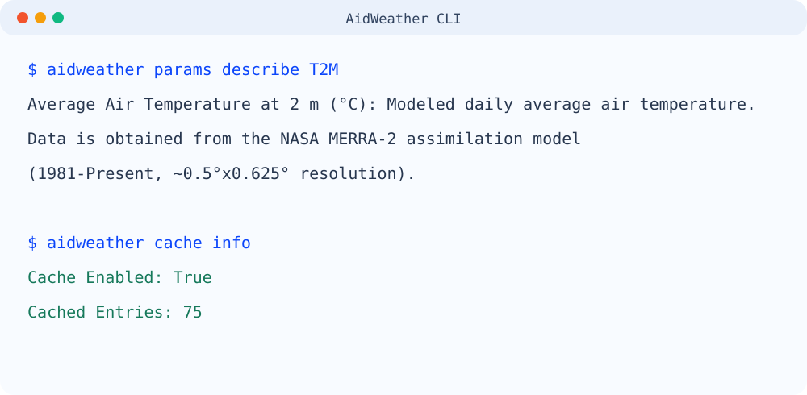

Weather · Public Python package
AidWeather
Retrieve and cache weather and solar data with its source context attached.
What you can inspect
Cached series · source metadata · documented retrieval

AidWeather brings NASA POWER series into a documented Python or command-line workflow for points, transects, and regions.
A submitted coordinate resolves to a source grid cell. These are modeled or satellite-derived data, not measurements taken at that exact point.
README, CLI guide and source →